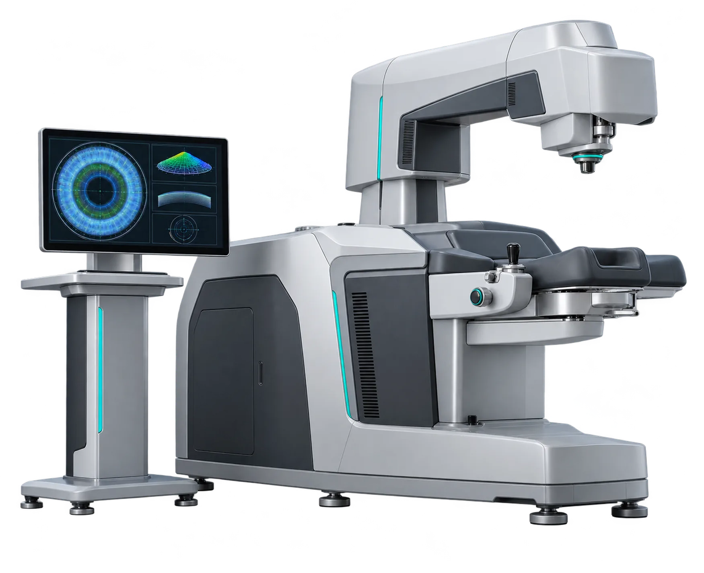
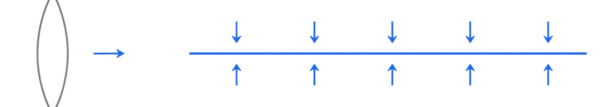
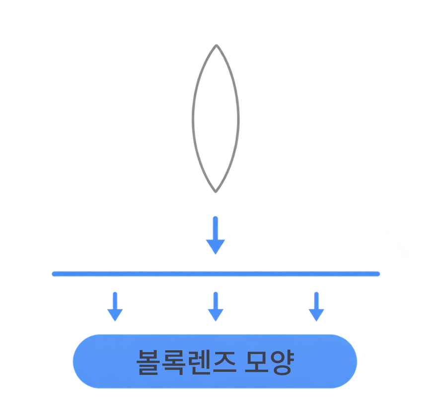

수술센터
SILK SMILE LASIK SILK SMILE LASIK SILK SMILE LASIK
가장 섬세하고,
가장 부드럽다
스마일라식에서 한 단계 더 나아간 차세대 시력교정술

Elita실크스마일라식이란?
정밀 광학 분야에서 쓰는 펨토초 기술Femtosecond로 개발한
최첨단 펨토초 레이저(초정밀 레이저)인
엘리타 장비 를 사용하여 각막 손상을 최소화하고
더욱 정밀한 수술이 가능합니다.
정밀 광학 분야에서 쓰는 펨토초 기술Femtosecond로
개발한 최첨단 펨토초 레이저
(초정밀 레이저)인
엘리타 장비 를 사용하여
각막 손상을 최소화하고
더욱 정밀한 수술이 가능합니다.
Point1
처음 도입된 양면 볼록 렌티큘 디자인
(The First Bi-convex)
실크스마일라식의 핵심 기술로, 렌티큘 양면이 볼록한
Bi-convex 형태로 디자인 됩니다.
기존 스마일의 비대칭 렌티큘 디자인을 개선해
각막 캡과 각막실질 사이의 접촉면을 빈공간 없이 만들어
수술 뒤 고위수차가 생길 가능성을 줄이고 시력의 질을
향상시키는데 큰 도움을 줍니다.
silk smile lasik
SILK SMILE LASIK PROCESS
process
-
실크스마일라식
Bi-convex 렌티큘 디자인
작은 스팟을 촘촘하게, 낮은 에너지로 조사해
각막을 분리하기 때문에,
렌티큘의 절삭면이
절삭면이 아주 매끄럽고 고릅니다. 이렇게 매끄러운
렌티큘은 수술 후
각막 캡과 실질이 빈 공간 없이
깔끔하게 접합될 수 있도록 돕습니다.볼록렌즈 모양

SILK SMILE LASIK PROCESS
Point2
최저 에너지 (The Lowest Energy)
지금 쓰이는 펨토초 레이저 가운데 가장 낮은 수준인
40nJ(나노줄)의 에너지로 각막 조직이 받는
손상을 줄여 수술 뒤 염증이 적고 회복이 빠릅니다.
SILK SMILE LASIK PROCESS
Point3
최소 스팟 사이즈 (The Smallest Spot Size)
1µm(마이크로미터)의 아주 작은 레이저 스팟으로
각막을 더 정밀하고 매끄럽게 절삭해
수술 정확도를 높이고 부작용 가능성을 줄입니다.
-
Point4
부드러운 렌티큘 박리
낮은 에너지와 작은 스팟 덕분에 렌티큘을
각막 조직에서 더 부드럽게 떼어 낼 수 있어
수술 중 각막 손상을 줄이고 더 편안하게 받을 수 있습니다. -
Point5
정밀한 보정 시스템
도킹한 뒤에도 눈 상태에 맞춰
중심축과 난시축을 정밀하게 보정하는
시스템을 갖춰 더 정확하게 교정할 수 있습니다. -
Point6
래스터 패턴 (Raster Pattern)
부담을 고르게 나누는 지그재그 방식의
래스터 패턴으로 각막 변형을 막습니다.
실크스마일라식의 장점,
추천 대상자 Recommend
수술장비
정밀 광학 기술로 만든
최첨단 펨토초 레이저 장비
펨토초 레이저로 완성한 스마일 장비 엘리타로
높은 정밀성과 안전성을 갖춘 시력교정을 합니다.